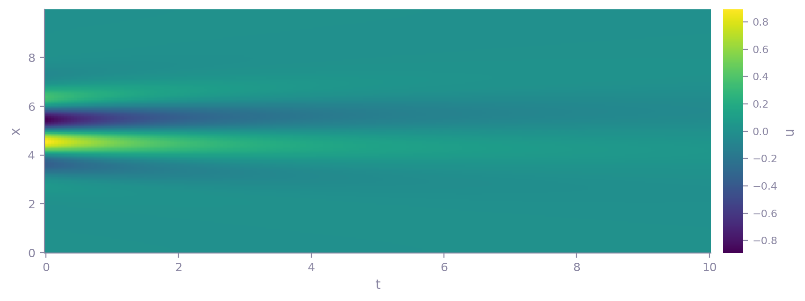
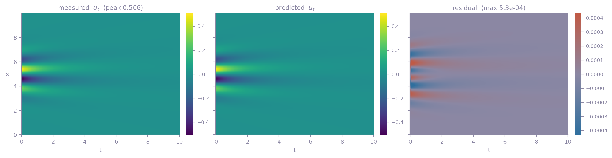
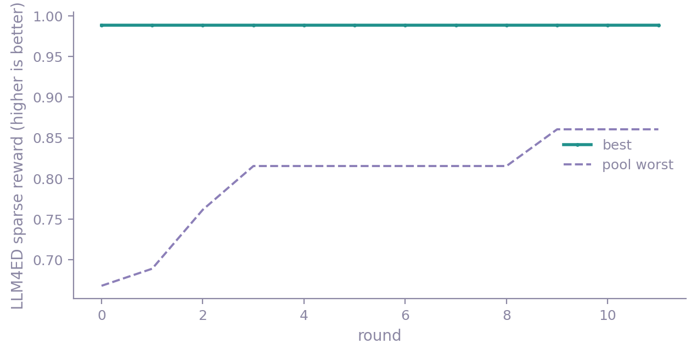

LLM4ED
A large language model proposes and revises candidate equations round by round, filtered by a sparse reward.
Usage
import kd
from kd import Llm4edConfig
dataset = kd.load_llm4ed_heat()
model = kd.Model(
algorithm="llm4ed",
generations=12,
config=Llm4edConfig(base_url="https://api.openai.com/v1"),
)
model.fit(dataset)
The endpoint is any OpenAI-compatible chat API; the key is read from the
OPENAI_API_KEY environment variable. Both are required: of the seven
algorithms, this is the one that calls a service outside the process.
To take the transport into your own hands instead, pass a provider=. It takes
anything satisfying kd.llm.LLMProvider (one prompt in, text out), so a run
can be given a client with its own timeout and headers, metered by
BudgetedProvider, or recorded to a JSONL tape by TapeRecordingProvider and
replayed offline later.
Main parameters
| Parameter | Default | Resume | Description |
|---|---|---|---|
temperature |
0.8 |
resume-safe | LLM sampling temperature. |
max_tokens |
1024 |
resume-safe | Maximum decoded tokens per request. |
stop_threshold |
0.995 |
resume-safe | Reward threshold for completion. |
reward_limit |
0.5 |
init-only | Minimum admitted sparse reward. |
pool_size |
5 |
init-only | Elite-pool capacity. |
All fields of Llm4edConfig
| Field | Type | Default |
|---|---|---|
temperature |
float |
0.8 |
max_tokens |
int |
1024 |
stop_threshold |
float |
0.995 |
reward_limit |
float |
0.5 |
pool_size |
int |
5 |
init_num |
int |
20 |
samples_per_epoch |
int |
8 |
max_llm_calls_per_propose |
int |
50 |
max_llm_calls_per_run |
int |
200 |
seed |
int |
0 |
model |
str |
gpt-4o-mini |
base_url |
str \| None |
None |
tape_record_path |
str \| None |
None |
Worked example
The run below uses the heat-equation dataset from the LLM4ED authors, mirrored
on Hugging Face Hub: a 200 × 201 grid over x in [0, 9.95] with periodic
boundaries and t in [0, 10]. The initial profile is a localized oscillation
centred near x = 5, a positive lobe at x = 4.55 against a negative one at
x = 5.45 with weaker lobes to either side, and diffusion spreads and flattens
it: the amplitude falls from 0.89 at t = 0 to 0.049 at t = 10, half of it gone
by t = 1.45.

Twelve rounds were run against nvidia/llama-3.3-nemotron-super-49b-v1.5,
capped at six endpoint calls per round, with a seed of 42. The equation returned
by the run:
| Equation | |
|---|---|
| Discovered | \(u_t = 0.05014\,u_{xx}\) |
| Reference | \(u_t = 0.05\,u_{xx}\) |
The term and the coefficient match. The model wrote a two-term right-hand side,
u_xx + u u_x; the sparse regression fitted the second coefficient to zero, so
one term survives and the reward counts one term.

Result interpretation
model.best_score_ is LLM4ED's own sparse reward,
(1 - 0.01 k) / (1 + RMSE / std(u_t)) for a k-term equation: higher is
better, with 1 as the upper bound. The term count enters the numerator, so a
four-term answer cannot score above 0.96 regardless of how well it fits. The reward is
rounded to four decimals before anything reads it, including the duplicate
filter inside a round. This run ends at 0.9889, with an nmse of 1.2e-06.
Every derivative comes from a finite difference of the observations, and the
fitted equation is on model.result_.equation, term by term with its
coefficient. Those coefficients are the algorithm's own sparse regression, not a
platform refit.
The search is recorded as well. kd.VizEngine renders the per-round record;
alongside the universal convergence curve, LLM4ED contributes three diagnostic
panels of its own (the full list is under Visualization):


viz = kd.VizEngine(output_dir="out/heat")
viz.render_all(model.result_, algorithm=model.algorithm_, dataset=dataset)
Method
The language model is the search operator. It never sees the data: it is given a symbol library, told what to write, and shown how its previous proposals scored.
The library is fixed for the run: the operators + - * / ^2 ^3 over the
operands u, u_x, u_xx, u_xxx and x. Every candidate is a right-hand
side written in it. The first round asks for a batch of
coefficient-free equations. Every round after that alternates between two
prompts: one lays the scored history out in ascending order and asks for
equations that would score higher, the other asks the model to carry out the
genetic operations itself, selecting two term sets, crossing them and mutating
the result.
Scoring is KD's, not the model's. Each proposed equation is parsed into terms,
the terms are differentiated from the data by finite difference, a sparse
regression (STRidge) fits the coefficients, and the reward is
(1 - 0.01 k) / (1 + RMSE / std(u_t)) for the k terms that survive with a
nonzero coefficient. Candidates at or below reward_limit are dropped, as are
ones whose reward repeats a reward already collected this round, and the round
keeps the best samples_per_epoch of what is left. Those go into an elite pool
of pool_size, and the next round's prompt shows the model that pool.
One round is one KD iteration, and generations sets how many are run.
References
Du et al. (2024). "Large language models for automatic equation discovery of nonlinear dynamics". Phys. Fluids 36, 097121. Paper · arXiv:2405.07761
Code: menggedu/EDL